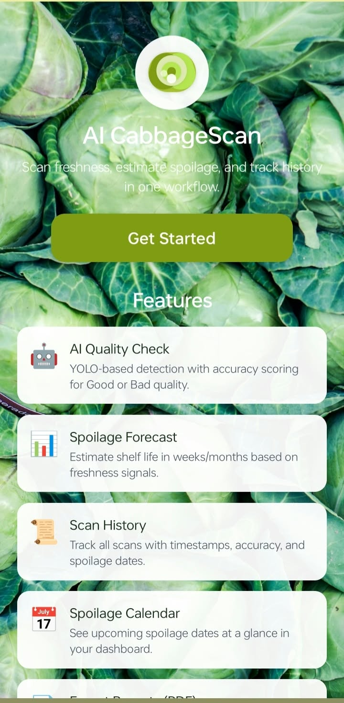
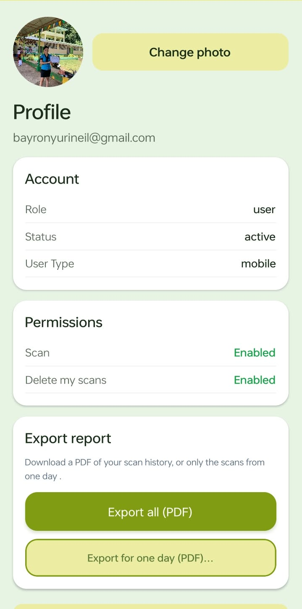
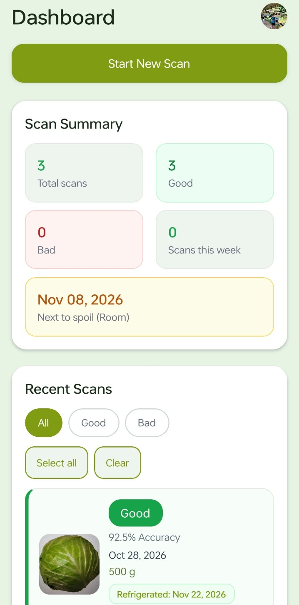
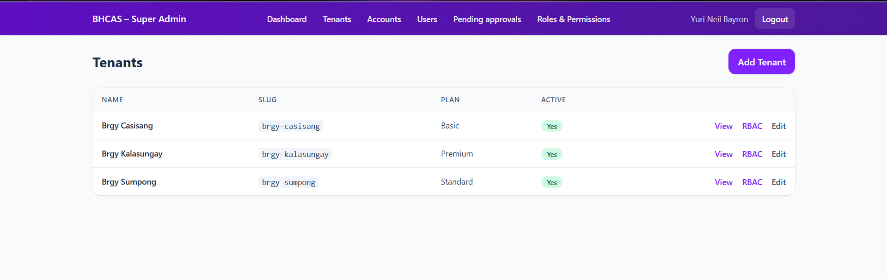
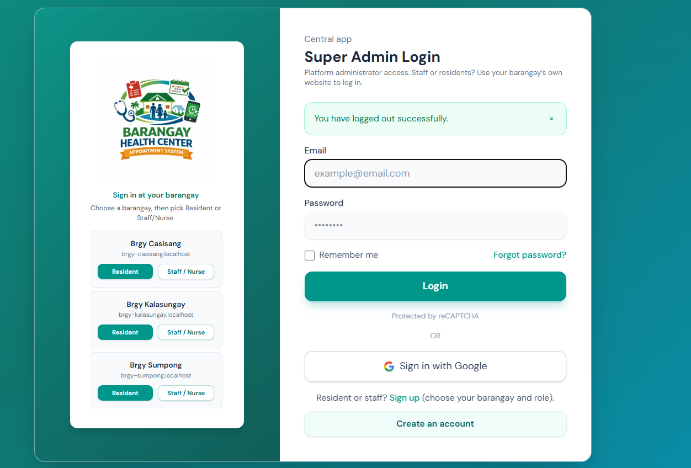
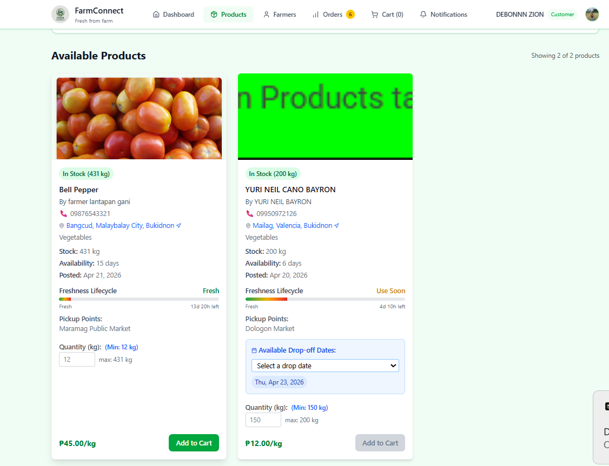
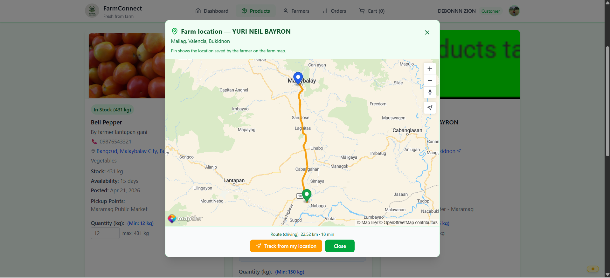

Capstone ProjectAI + Mobile
AI Cabbage Freshness
A mobile application that uses computer vision to evaluate cabbage freshness in real time and support local farmers.
Tech Stack:
React NativeFastAPIYOLOv8PyTorchFirebase
- Custom-trained model for produce quality assessment.
- FastAPI backend for image inference and response handling.
- Mobile-first workflow designed for real agricultural use.



Public ServiceWeb System
Barangay Health Connect
A multi-tenant appointment platform for barangays that streamlines health scheduling and supports better service delivery.
Tech Stack:
LaravelMySQLBootstrapXAMPP
- Tenant separation for secure barangay-specific data handling.
- Scheduling flow that reduces manual coordination overhead.
- Dashboard reporting for staff and administrators.


AgriTechWeb App
FarmConnect
A farmer-focused mobile platform for market access, updates, and basic resource coordination in low-friction environments.
Tech Stack:
React NativeMongo Atlas DBTailwind CSS
- Real-time market and supply information for farmers.
- Interface designed for mobile access and constrained connectivity.
- Cloud sync for faster updates across users.

